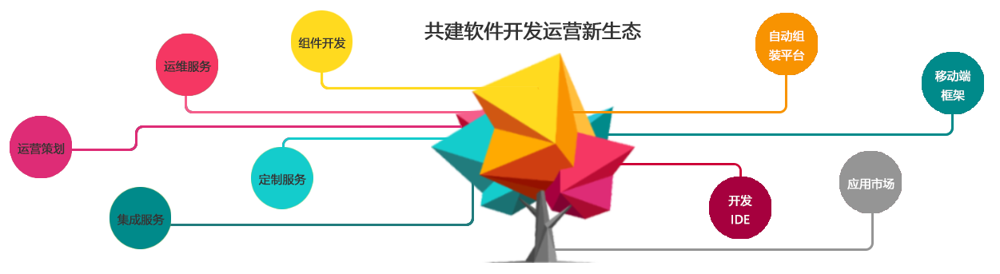

成都创流科技股份有限公司成立于2017年，总部设于成都，致力于打造中国领先的软件开发服务平台——天马工场。创流以专注、专业的态度，以强大的产品研发能力、 咨询能力，成功服务于全国上百家客户。
天马工场是一个帮助解决中小组织的软件开发问题和中小组织的运营缺乏问题的平台，天马工场将APP开发者、运营运维人才汇聚于此，服务于具有软件开发需求和内容 运营需求的企业，为企业或组织解决业务APP上线慢、运维难、运营想法缺乏的问题。

天马工场着力于打造应用生态系统，包含拥有核心知识产权的技术支持平台和移动开发框架。在天马工场的平台上，积累了大量成熟的APP功能模块，用户在需要构建APP 时，可自行选购需要的模块，一键调用无需另外开发，将APP开发到上架周期从6个月缩短为2周。目前天马工场与100多第三方优质开发服务提供商建立合作，聚合更丰富的 APP功能模块，如资讯、 视频、 直播、吸粉活动、电视节目等，满足各类APP的开发需求。
天马工场一直在创新技术、创新商业模式。在全新的商业模式下，我们让APP开发和运营具有“效率高”“技术门槛低” “资金投入低”的优势，以可靠的APP开发平台作 为支撑，为企业提供省心、安心、放心的软件开发、运维、运营相关服务。